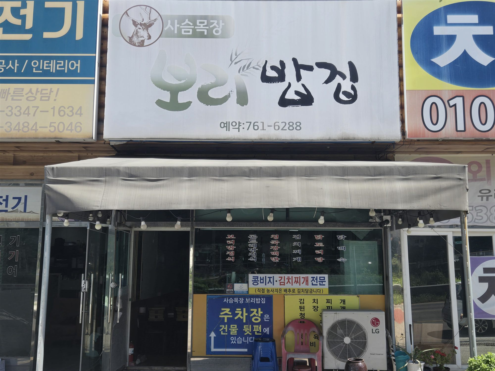
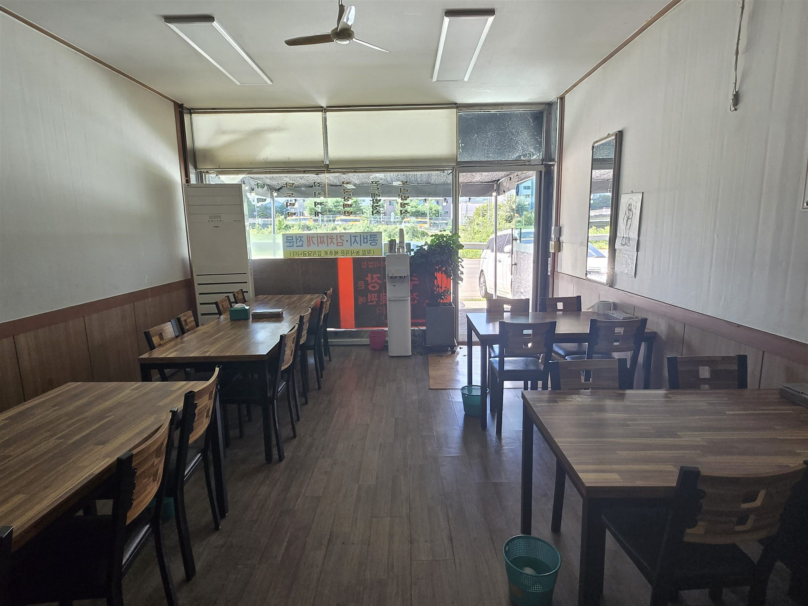
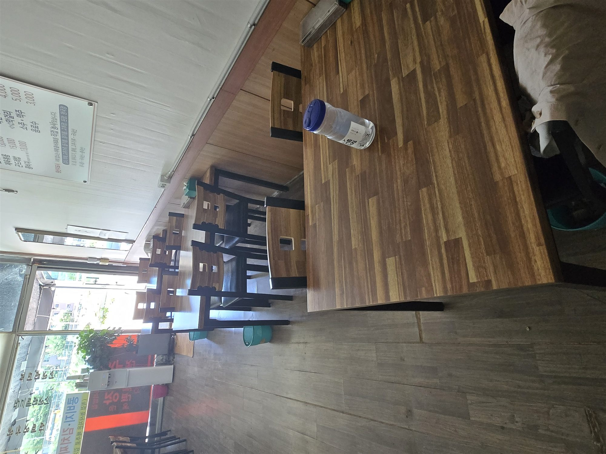
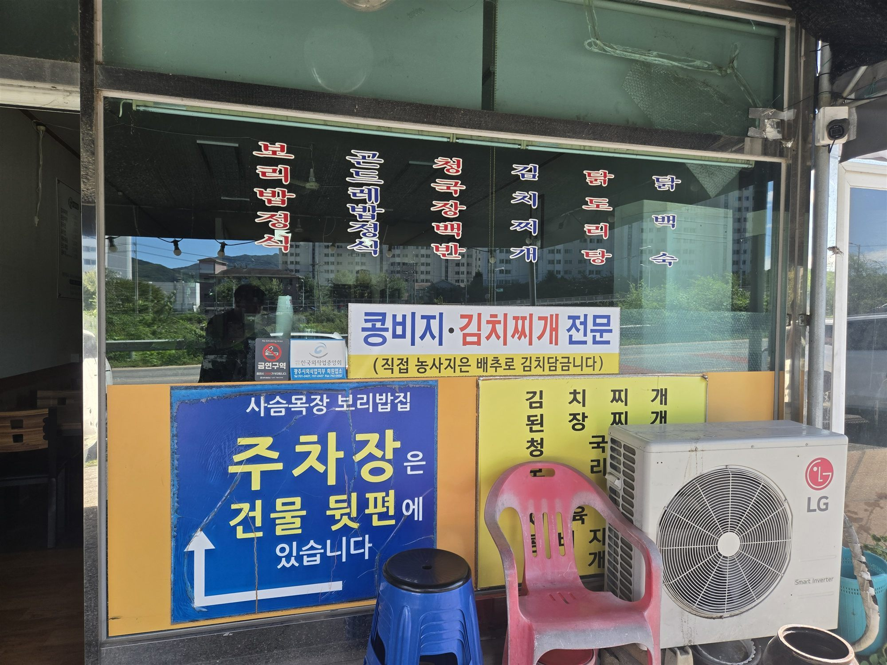

Korean home-style table · Gonjiam
직접 농사지은 재료와 정갈한 반찬으로 차리는 따뜻한 한식 한 상입니다.

메뉴
구수한 보리밥과 정갈한 반찬으로 차린 한 상
10월–3월에 만나는 계절 별미
※ 메뉴와 가격은 매장 사정에 따라 달라질 수 있습니다.
가게 풍경
나무 테이블이 놓인 실내와 매장 입구의 모습입니다. 사진을 누르면 크게 볼 수 있어요.



직접 농사 김치 · 야채 · 장류 · 들기름 · 참기름
국내산 닭 · 쌀 · 돼지고기 · 황태 · 고춧가루
콩나물 국내산 · 중국산
Location
곤지암천로를 따라 오시면 1층에 있습니다. 주차장은 건물 뒤편을 이용해 주세요.
사슴목장 보리밥집